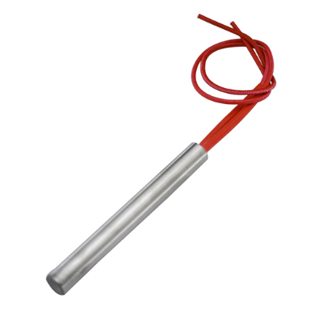
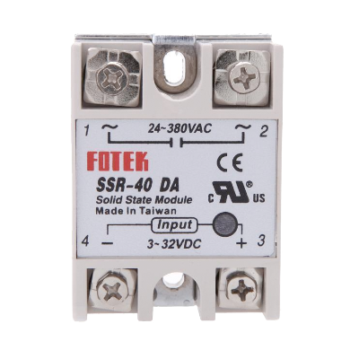
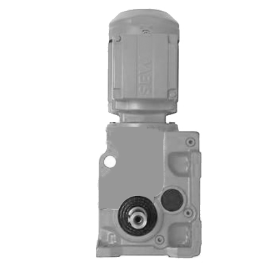
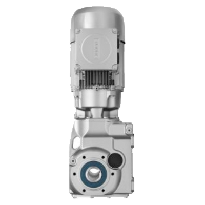
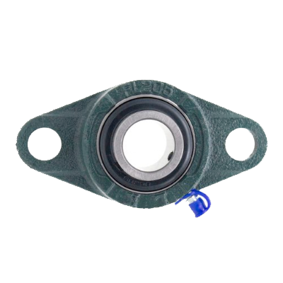

build/components
id: components title: Overview of components sidebar_label: components
# コンポーネントの概要（ドラフト1.1） ### エレクトロニクス | Component | Name | Used in | Buy | Learn more | |----------------|----------------|------------|--------|--------| |  | __Cartridge heater__
Used to heat the aluminium blocks in the sheetpress | Sheetpress | online, online | [forums](https://davehakkens.nl/community/forums/topic/the-big-electronics-topic/)| | | __PID controller__
Measures the temperature from thermocouples and uses it to turn on heating elements | Extruders, injection, sheetpress, compression | online, online |[forums](https://davehakkens.nl/community/forums/topic/the-big-electronics-topic/)| |
 | __Thermocouple (type K)__
| __Thermocouple (type K)__ Measures the temperature and send it to the PID | Extruders, injection, sheetpress, compression | online, online |[forums](https://davehakkens.nl/community/forums/topic/the-big-electronics-topic/)| | | __3 Phase Plug__
Connects the powercord with the wall socket | Extruders, Shredders, injection, sheetpress | hardware store, online || |
 | __Relais__
| __Relais__ Uses a low output from the PID controller and Arduino to switch high current (230V) | Shredders, Extruder Pro, Sheetpress | electronic shop, online |[forums](https://davehakkens.nl/community/forums/topic/the-big-electronics-topic/)| |  | __Solid state Relais__
Uses the low (5V) output from the PID controller to switch heating elements | Extruders, injection, sheetpress, compression | online, online |[forums](https://davehakkens.nl/community/forums/topic/the-big-electronics-topic/)| |
 | __Heatbands small__
| __Heatbands small__ Used the heat up the barrel | Extruder, injection | online, online |[forums](https://davehakkens.nl/community/forums/topic/the-big-electronics-topic/)| |
 | __Heatbands large__
| __Heatbands large__ Used the heat up the barrel | Extruder Pro | online, online |[forums](https://davehakkens.nl/community/forums/topic/the-big-electronics-topic/)| |
 | __Frequency Controller__
| __Frequency Controller__ Control the speed of motor | Extruder Pro, optionally extruder | online, online |[forums](https://davehakkens.nl/community/forums/topic/the-big-electronics-topic/)| ### メカニクス | Component | Name | Used in | Buy | Learn more | |----------------|----------------|------------|--------|--------| |
 | __Motor Shredder__
| __Motor Shredder__Powers the shredder | Extruder Pro, optionally extruder | online, online |[forums](https://davehakkens.nl/community/forums/topic/the-big-electronics-topic/)| |
 | __Motor Extruder__
| __Motor Extruder__Motor that powers the extruder | Extruder Pro, optionally extruder | online, online |[forums](https://davehakkens.nl/community/forums/topic/the-big-electronics-topic/)| |  | __Motor Shredder Pro__
Big motor that powers the shredder Pro | Extruder Pro, optionally extruder | online, online |[forums](https://davehakkens.nl/community/forums/topic/the-big-electronics-topic/)| |  | __Motor Extruder Pro__
Big motor that powers the extruder Pro | Extruder Pro, optionally extruder | online, online |[forums](https://davehakkens.nl/community/forums/topic/the-big-electronics-topic/)| | | __Wood auger__
Screw inside the extrusion barrel | Extruder Pro, optionally extruder | online, online |[forums](https://davehakkens.nl/community/forums/topic/the-big-electronics-topic/)| |
 | __Compression screw small__
| __Compression screw small__ Screw that can be optionally used in the extrusion to give more pressure | Extruder Pro, optionally extruder | online, online |[forums](https://davehakkens.nl/community/forums/topic/the-big-electronics-topic/)| |
 | __Compression screw large__
| __Compression screw large__ Screw used inside the barrel of the Extruder Pro | Extruder Pro, optionally extruder | online, online |[forums](https://davehakkens.nl/community/forums/topic/the-big-electronics-topic/)| |
 | __Bearing small__
| __Bearing small__ UCFL 204 bearings used to make things runs smooth | Extruder Pro, optionally extruder | online, online |[forums](https://davehakkens.nl/community/forums/topic/the-big-electronics-topic/)| |  | __Bearing large__
UCFL 209 bearings used to for heavy duty| Extruder Pro, optionally extruder | online, online |[forums](https://davehakkens.nl/community/forums/topic/the-big-electronics-topic/)|